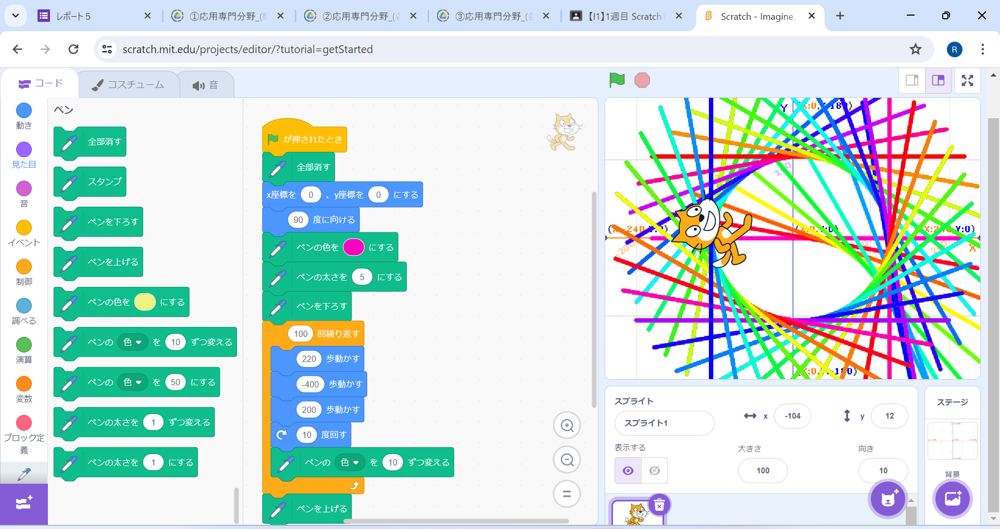
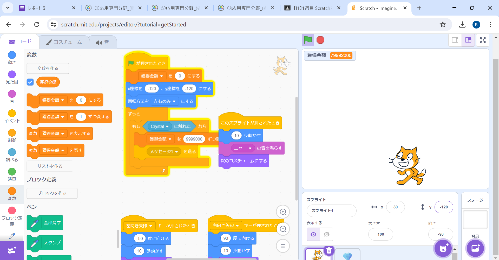

1週目のレポート ： 公大高専１年実習I-1
3a班12番 sakopoooon
第1週目
1-1 サイエンスアート

1.内容
スクラッチを使って線を書くプログラムを作成しました。
具体的には猫が200歩進んで-400歩進み、200歩進んで元の位置に戻ってきて、10度回る、その進んだ跡を虹色にして、100回繰り返すようにしました。
あと、プログラムは上から順番に動くのでブロックの前後の位置を考えて組みました。
2.感想
scratchでゲームをプレイしたことはあったけど、自分でプログラムを作成したことがなかったので心配でしたが、うまく組み立てられてうれしかったです。
1-2 ゲーム

1.内容
このプログラムは猫が左右移動のみができるようにして、右のボタンを押すと右に10歩動き、歩いているコスチュームを交互に表示するようにしました
宝石を画面の端々の間で４段階の速さで落下させて、猫が宝石に触れたときに左上に表示した「獲得金額」を増やすようにしました。
2.感想
今回作ったプログラムはとてもシンプルだけど、いろんなゲームに応用できると思いました。
1-3 ホームページ作成
私のホームページ
1.内容
ないようないよう
2.感想
かんそうかんそう
各ページへのリンク
1週目のレポート
2週目のレポート
3週目のレポート
私のホームページ